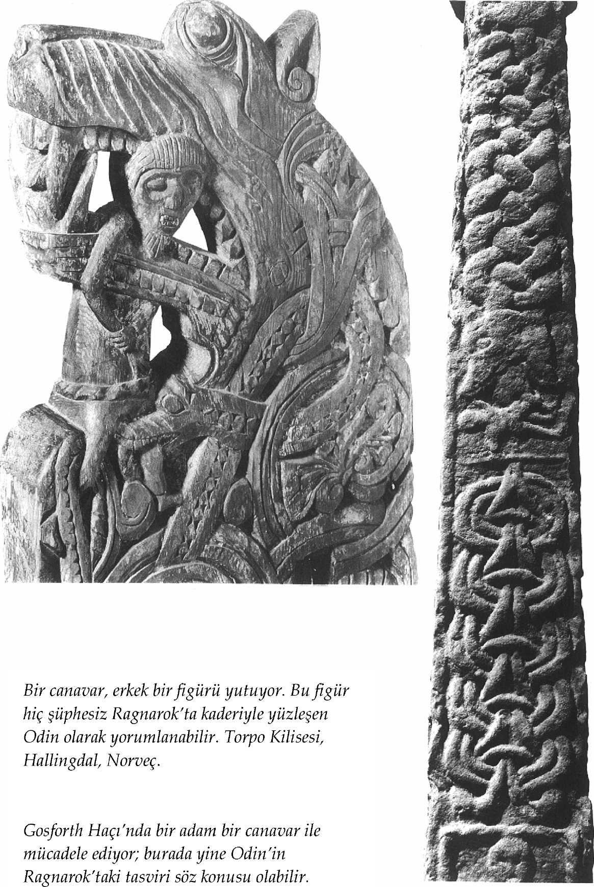

İnsanların çoğu -belki de hepsi- uzak geçmiş ve uzak gelecek hakkında kafa yorar: Bu dünya nasıl meydana geldi? Öncesinde ne vardı? Dünyanın sınırları nelerdir ve bu sınırlar nasıl belirlenmişlerdir? İnsan nasıl (ya da neden) yaratıldı? Dünyanın sonu nasıl gelecek ve ondan sonra ne olacak? Böylesi düşünceler, mitlerin yaratılmasında etkili olan kaynaklardır. Özellikle İskandinav mitleri söz konusu olduğunda, bu daha da belirgindir. İskandinavların bu sorulara verdikleri yanıtlar genellikle tutarlı olmadıkları gibi, kesinlikle kapsamlı da değildirler. Ayrıca, bu yanıtlarda tek bir Ortodoks inancın dile getirildiğini de kabul etmek zorunda değiliz.
En önemli Edda şiirlerinden biri olan ve 'Bilge Kadının Kehanetleri' anlamına gelen Voluspá'nın daha eski tarihlerde kaleme alınmış olan kimi bölümleri, bize bu konuda bir hareket noktası sağlayabilir. Söz konusu bölümler, İsa'nın öğretilerinin, İskandinavların yaşamları üzerinde etkili olmaya başladığı bir tarih olan MS 1000 yılından kalmadırlar.[S.105] Bu nedenle, Voluspá şiirinin elimizdeki hali, kimi noktalarda Yahudi-Hıristiyan geleneğin izlerini yansıtabilmektedir. Dahası, bu şiirin Codex Regius içerisinde yer alan aslı da onun hâlihazırda tahrif edilmiş olduğuna işaret etmektedir; metinde birtakım dikkat çekici boşluklar vardır ve metne, izlemesi daha zor olan ilaveler yapılmış olduğu da muhtemeldir. Sonuç olarak elimizin altındaki temel kaynağımız dahi kusurludur. Voluspá şiiri, 'kadın kâhin ya da sybil' anlamına gelen ve kimliği meçhul olan bir volva'nın kehanetlerinden oluşmaktadır. Bu şiirde Valfodr adıyla anılan Odin, kadın kâhinden anımsayabildiği ilk şeyleri, yani "insanoğlunun kadim öykülerini" kendisine anlatmasını ister ve bu konuda onu zorlar. Kadın kâhin, ona dünyanın yaratılışından başlayıp yine eski zamanlarda yaşanmış olan başka olaylar üzerinden, kendisine önceden malum olan gelecekte yaşanacak bir olaya, muhtemelen Odin'in asıl korkusu hakkındaki bir kehanete varana dek, bir dizi öykü anlatır. Kâhin, evrenin ilk hali hakkında şunları söyler:
Bir zamanlar,
Hiçbir şey yoktu.
Ne kara, ne deniz,
Ne de buz gibi dalgalar;
Dünya yoktu,
Ne de yüce gökler.
Var olan yalnızca boşluktu.
Yaşam diye bir şey yoktu.
Buraya kadar ne söylenmeye çalışıldığı gayet açıktır ama öykünün bundan sonrası, muammalı denebilecek derecede imalı bir hal almaktadır. Kâhin'in anlattığı öyküye göre, Bur'un oğulları, karaları şekillendirip dünyanın merkezini teşkil eden ve içinde canlıların yaşadığı etrafı denizlerle çevrili Midgard denen bölgeyi oluşturmuşlardır. Her yer yeşilliklerle kaplanmıştır. Ama bu aşamada gökyüzü henüz bir düzene sokulmuş değildir.[S.106] Bu yüzden, tanrılar -ki bu noktada, özgün metinde, 'düzenleyici güçler' anlamına gelen regin sözcüğü kullanılmaktadır- derhal toplanıp bu konuyu meclislerinde tartışmışlar ve zamanı farklı dilimlere bölmeye karar vermişlerdir. Buna göre, zamanı gündüz, gece, aylar ve yıllar şeklinde düzenlemişlerdir. Daha sonra, muhtemelen 'Çamlık' anlamına gelen, Idavoll denen bir düzlükte buluşmuşlar ve oraya evler, tapınaklar inşa edip demir ocakları kurmuşlardır. Bu ocaklarda değerli madenleri işlemişler ve alet edevat üretmişlerdir. Böylece, zenginliklerine zenginlik katarak uzun bir süre mutluluk içinde yaşamışlardır. Bu süre boyunca, oyun taşları altından olan ve dünyanın kaderini tayin ettiğine inanılan bir masaüstü oyunu oynamışlardır. Ama sonra ne olduysa, bir felaket yaşanmıştır. Bu felaketin ne olduğu hakkında elimizde ne yazık ki fazla bir bilgi yok. Bildiğimiz tek şey, söz konusu felaketin üç korkunç dişi devin gelişiyle ilgili olduğudur. Gelgelelim, tam bu kıtasında şiirin kesintiye uğramaktadır ve görünüşe göre, şiiri alıntılamış olan Snorri de bu felaketin ne olabileceği hakkında bir fikre sahip değildir.
Amatör bir evrenbilimci dahi Voluspá öyküsünde pek çok kara delik keşfedebilir, zira şiirde açıklanmayan birçok nokta bulunmaktadır. Bur'un oğulları kimlerdi (acaba Odin ve iki kardeşi miydi)? Nereden peyda olmuşlardı? Gökcisimlerini kimler yaratmıştı? Tanrıların kökeni neydi ve 'düzenleyici güçlerine' nasıl kavuşmuşlardı? Falan filan. Voluspá şiirinde karşımıza çıkan bilgi eksikliği, hiç kuşkusuz şairin bu şiiri kusurlu biçimde aktarmasından ya da yazıya geçirmesinden ileri geliyor da olabilir. Bu soruları yanıtlamaya çalışırken, Snorri'nin de birtakım güçlüklerle karşılaşmış olduğu aşikârdır. Ama o, hiç değilse, bir soru cevap şiiri olan Vafþúðnismál'daki büyük ölçüde mitolojik malzemeleri yorumlamak suretiyle, yaratılışı açıklamaya yönelik daha başarılı bir girişimde bulunmuştur. Gylfaginningde Gangleri/Gylfi, üç gizemli hükümdara "Başlangıçta ne vardı?", "Her şey nasıl başladı?", "Dünya nasıl yaratıldı?"[S.107] ve "Ondan önce ne vardı?" gibi sorular sorar. Bu sorulara karşılık olarak Yüce, yukarıda alıntıladığım dizeleri tekrar eder ve aslına bakarsanız bunu, Codex Regius'takinden çok daha başarılı bir üslupla dile getirir. Fakat hükümdarlar bu yanıtı yeterli görmemiş olacaklar ki, getirdikleri bu açıklamaya anlaşılması güç birtakım ilaveler yapmayı da ihmal etmezler. Bir kısmı çok soğuk ve buzlar içerisinde olan (Niflheim, 'Sisler Diyarı' denen), bir kısmı ise kavurucu sıcaklıkta ve alevler içerisinde olan (Muspell denen) bir evren betimlerler. Bu iki bölgenin ortasında Büyük Boşluk (Ginnungagap) yer almaktadır. Ginnungagap'a akan bir nehir, burada buz tutmuş ve farklı katmanlardan oluşan bir zemin meydana getirmiştir. Sıcağın ve soğuğun buluştuğu orta noktada eriyen buzlardan akan ve havanın ısınmasıyla artan damlalar, bir buz devi olan Ymir'i meydana getirmişlerdir. Bütün bir buz devleri soyu, hayret verici bir parthenogenesis* süreci sayesinde Ymir'den türemiştir: "Onun sol kolunun altından bir erkek ve bir kadın peyda oldu; bir ayağı, diğerinden bir oğul sahibi oldu".
* Döllenme olmaksızın üreme. (çev.)
Gangleri, olan biteni kavramaya çalışır ve Ymir'in ne ile beslenmiş olduğunu sorar. "Eriyen buzlardan akan damlalar bu kez Audhumla denen bir inek meydana getirdiler. Onun memelerinden dört süt ırmağı aktı. Ymir akan bu sütle beslendi" yanıtını alır. Ama bu yanıt da onu tatmin etmez ve bu kez de ineğin ne ile beslenmiş olduğunu sorar. Bu soruya aldığı yanıt ise "inek, etrafındaki tuzlu kayaları yalayarak beslendi. İlk günün akşamı, kayaların arasından bir adamın saçı belirmeye başladı. İkinci gün, adamın kafası ortaya çıktı. Üçüncü gün, bedeninin tamamı ortaya çıktı. O adama Buri dendi" şeklinde olur. Buri birisiyle evlenmiştir (ama Gangleri bunun kim olduğunu hükümdarlara sormayı unutmuştur) ve bu evliliğinden Bor adında bir oğlu olmuştur. Bor ise dişi bir devle evlenmiş ve bu kadından Odin, Vili ve Ve adında üç oğlu olmuştur.[S.108]
O günlerde devler dünyayı arşınlamaktaydılar. Ama günün birinde, tıpkı Nuh peygamberin zamanında meydana gelen felakete benzer bir olay, devlerin de başına geldi. Odin, Vili ve Ve, Ymir'i katlettiler. Devin yaralarından öyle çok kan aktı ki, soyunun neredeyse tamamı bu kan selinde boğuldu. Yalnızca son anda lúðr denen bir tür gemiye binmeyi başarmış olan Bergelmir adlı birisi ve onun ailesi bu felaketten sağ kurtulabildi. Snorri'nin 'gemi' diye yorumladığı lúðr sözcüğü, aslında 'sandık, tabu' anlamına gelmektedir. Odin ve kardeşleri, katlettikleri Ymir'in cesedini israf etmediler ve Ginnungagap'ın ortasına bıraktılar. Burada, eti toprağa, kemikleri yalçın kayalıklara dönüştü. Dişleri ve un ufak olmuş kemikleri, çakılları ve küçük kayaları meydana getirdi. Kanı ise dünyayı çevreleyen denizi ve diğer durgun suları oluşturdu. Üç kardeş, Ymir'in kafatasını gök kubbeyi oluşturması için adeta büyük bir incelikle işlediler. Ardından, dünyanın üzerini örtecek bu kubbeyi havaya kaldırsınlar diye pusulanın ana yönlerine karşılık gelen noktaların her birine, birer cüce yerleştirdiler (bu cücelerin nereden geldiği de ayrı bir merak konusudur). Muspell'den sıçrayan kıvılcımları ve kızgın korları yakalayıp kimisi sabit duracak, kimisi hareketli olacak şekilde gök kubbeye serpiştirip gök cisimlerini düzenlediler. Gelgelelim, kardeşlerin işleri henüz bitmemişti. Ymir'in kaşlarını alıp, insanları devlerden koruyacak bir duvar örmek için kullandılar. Bu duvarın içerisinde kalan korunaklı bölge, insanların yaşadıkları yer olan Midgard'dır. Daha sonra, Ymir'in beynini alıp bulutları oluştursun diye gökyüzüne savurdular. Soru cevap tarzında kaleme alınmış bir diğer şiiri olan Grímmnismál''de, bu öyküsünü Yüce'nin ağzından doğrulanmaktadır:
Ymir'in etinden yoğruldu dünya,
Ve kanıyla doldu deniz.
Kayalar kemiklerinden meydana geldi, ağaçlarsa saçlarından,
Ve de gök kubbe kafatasından. [S.109]
Devin kaşlarından, âlicenap tanrılar,
Midgard'ı insanoğlu için yarattılar.
Ve beyninden yaratıldı,
O öfkeli fırtına bulutları.
Bu dünyada insanlar, tanrılar, canavarlar, devler ve elfler gibi çeşitli varlıklar yaşamaktadır. Fakat bu farklı varlıkların yaşadıkları mekânların birbiriyle olan coğrafi ilişkisi pek de açık değildir; muhtemelen hiçbir zaman da açık olmamıştır. Yine de, Snorri bu farklı mekânlar arasındaki coğrafi ilişkileri belirlemeye yönelik bir girişimde bulunmuştur. Snorri'ye göre, devler dipsiz okyanusun kıyısında, daire şeklindeki yeryüzünün dış kenarında yaşamaktadırlar. İnsanlar ise bu dairenin merkeze daha yakın, Midgard denen korunaklı kısmında ikamet etmektedirler. İki tür elf vardır: bunlardan ilki, yeryüzünün derinliklerinde yaşayan, kara elflerdir. İkincisi ise Alfheim denen bölgede yaşayan ışık elfleridir. Tanrıların ve tanrıçaların evi Asgard'dır. Her birinin bu bölgede kutsal bir mekânı olmakla birlikte, tanrıların ve tanrıçaların gündelik konutları, bütün mekânların en kutsalı olan, daire şeklindeki yeryüzünün tam merkezinde yer alan ve heybetli dalları dünyanın üzerine sarkan Yggdrasil denen büyük dişbudak ağacının altında bulunmaktadır. Bu görkemli ağacın köklerinden biri, suyunda bütün bilgeliğin ve sağduyunun saklı olduğu, Mimir'in kuyusuna kadar uzanır. Odin, bu kuyunun suyundan bir yudum içip bilgeliğe ulaşmak istediğinde, ondan gözünün birini rehin bırakması istenmiştir. Bu yüzden, Odin hep tek gözlü tasvir edilir. Ağacın diğer bir kökü ise Yazgı Kuyusu'na uzanmaktadır. Bu kuyunun hemen yanı başında, Urd, Verdandi ve Skuld denen (ve 'eli mahkûm', 'irticalen' ve 'olması gereken' diye çevrilebilecek) üç yarı tanrıçanın yaşadığı büyük bir salon bulunur. Bu yarı tanrıçalar insanların yazgılarını belirleyen nornlardır. Snorri, bu noktada İskandinav mitlerinde bir karışıklık olduğunu ima eder,[S.110] zira bazı mitler doğdukları gün insanlara musallat olan ve yaşamları boyunca onların yazgılarını olur olmaz şekilde yönlendirebilen başka nornlardan da söz etmektedir. Gangleri bu durumu "Nornlar insanların yazgılarını yönetirlerse adaletsizlik alır başını gider. Kimisi şatafatlı bir hayat sürerken, kimisi sefalet içinde yüzer. Kimisi uzun bir ömür sürerken, kimisi genç yaşta gider. Kimisi şan şöhret ya da başarı yüzü görmezken, kimisi bunlardan ziyadesiyle nasiplenir" diye ifade eder. Ve Yüce bile, bu ezeli sorun için pek de ikna edici bir çözüm önerisi getirememektedir.
Bu dünyada ebedi olan hiçbir şey yoktur. Büyük dünya ağacı bile saldırılara maruz kalabilir. Snorri, ağacın düşmanlarının kimler olduğu konusunda Grímmnismál şiirinden bir dörtlük alıntılayarak ipucu verir:
Dişbudak ağacı Ygdrassil çeker cefa,
İnsanoğlunun tahayyül edebileceğinden bile fazla.
Çürür dalları, erkek karaca kemirir tepesini,
Yılan Niddhog parçalar köklerini.
Nornlar, Yazgı Kuyusu'ndan aldıkları suyu ve çamuru ağacın dalları üzerine dökerek, onu korumaya çalışırlar. Bu büyülü sıvı, çürümeyi önlemeye yardımcı olur. Ama nihayetinde, tıpkı tanrıların kendisi gibi, ağaç da bir gün ölecektir. Onlar da en az insanoğlu kadar ölümlüdürler.
Başka bir mit ise insanoğlunun ortaya çıkışını anlatmaktadır. Bu öykünün asıl kaynağı, Voluspá şiiri içerisinde yer alan bir çift dörtlüktür. Voluspá şiirinde bu noktada bir karışıklık varmış gibi görünmektedir. Bu yüzden, söz konusu dizelerin özgün metnin birer parçası mı yoksa sonradan yapılmış eklemeler mi olduklarından emin değiliz. Fakat öykünün ayrıntıları konusunda bir karışıklığın söz konusu olduğuna hiç kuşku yoktur ve öykünün başlangıcı (ve sonu) birdenbire karşımıza çıkmaktadır:[S.111]
Üçü oraya vardıklarında,
Kudretli ve âlicenap Aesir, o mekâna.
Buldular ikisini de sahilde;
Yazgıları olmayan Ask'ı ve Embla'yı.
Ne nefesleri vardı ne de canlı ruhları,
Ne sesleri, ne renkleri ne de akan kanları.
Hoenir verdi ruhlarını, Odin üfledi nefesi,
Lodur verdi onlara hem kanı hem de renklerini.
Snorri'nin bu dizeleri kendi Nesir Edda'sına alabilmesi için anlaşılır hale getirmesi gerekmekteydi. Metinde birtakım eklemeler ve değişiklikler yapmak pahasına, bunu başarmıştır da. Snorri, Gylfi'nin ağzından bu dünyada yaşayan insanların nereden geldiklerini sorar ve sonra bu soruya Yüce'nin ağzından bir yanıt verir:
Bor'un oğulları [Voluspá şiirinden farklı olarak, burada anılan tanrılar Odin, Vili ve Ve'dir] sahilde yürürlerken iki kütüğe rastladılar. Kütükleri alıp onlara insan şekli verdiler. Birincisi onlara nefes ve hayat verdi; ikincisi onlara idrak ve hareket yeteneği verdi; üçüncüsü ise onlara şekil verdi ve konuşma, duyma ve görme yeteneği bahşetti. Sonra hep birlikte onlara kıyafet ve birer ad verdiler. Erkeğe Ask [dişbudak ağacı], kadına ise Embla [karaağaç ya da asma anlamına geliyor olabilir] dediler. İnsan ırkı işte bu ikisinden türedi ve Midgard denen topraklar onlara bahşedildi.
Bu dünyada toplumsal sınıfların nasıl ortaya çıktığını öğrenebilmek için, 'Rig'in kıssası' anlamına gelen ve kimileyin Rigsmál olarak da anılan Rigspula adlı oldukça sıra dışı başka bir şiire başvurmamız gerekir. Bu şiir, bir Edda şiiri olmasına rağmen, Codex Regius içerisinde yer almamaktadır. Dolayısıyla, bu öykü hakkındaki temel kaynağımız yine Snorri'nin Nesir Edda'sı içerisinde yer alan bir elyazmasıdır. Öykü, Áss mı yoksa Vanr mı olduğu tam olarak bilinmeyen, kimliği meçhul tanrı Heimdall'ın[S.112] Rig takma adını kullanarak yaptığı yolculuklar üzerinden, saray soylularının ve diğer toplumsal mevkilerin açıklamasını sunmaktadır. Heimdall'ın kullandığı takma adın Eski İrlanda dilinde 'kral' anlamına gelen rig sözcüğüyle bağlantılı olması, Kelt kültürünün bu şiir üzerinde etkili olmuş olabileceği yönünde bazı kuşkular uyandırmaktadır. Şiirin nesir tarzında kaleme alınmış olan giriş kısmı şöyle başlar:
İnsanlar, kadim zamanlarda Aesir arasından gelen Heimdall adlı birisinin yapmış olduğu yolculukları rivayet etmişlerdir. Bir gün Heimdall, sahilde dolaşırken bir çiftlik evine rastlamış ve ev sahiplerine kendisini Rig olarak tanıtmış. Bu şiir işte o tarihten sonra neler olduğunu anlatmaktadır.
Heimdall, bu şiirde, yapacağı işlere uygun biçimde, kunningr, rammr ve roskr, yani kurnaz, sert ve dinç olarak betimlenmektedir. Çiftliğe vardığında, Ai ve Edda (büyük büyükbaba ve büyük büyükanne) denen iki ihtiyar mutfakta oturmaktadır. İhtiyarlar, misafirleri olduğunu görünce hemen onu içeri buyur ederler. Katık ve et suyu kullanarak ellerinden gelen en iyi şekilde, ona vasat bir akşam yemeği hazırlarlar. Gece olduğunda, Rig ihtiyarların arasına yatar. O gecenin üzerinden tam dokuz ay geçtikten sonra Edda bir erkek çocuk dünyaya getirir. Çocuğa Thrall adını koyarlar. Bu çocuk büyüdüğünde, gündelik sıradan işlerle uğraşmaya yatkın son derece güçlü kuvvetli ama bir o kadar da çirkin ve kaba saba biri olur çıkar ve kendisine münasip bir gelin bulup evlenir. Karı koca, böylece, bayağı adlara sahip bireylerden oluşan avam bir aile kurarlar. Bunlar, gübreleme, hayvanları gütme, tezek yapma gibi çiftlikteki ağır işlerle uğraşmaya yatkındırlar. Böylece köle soyu ortaya çıkmıştır.
Rig yoluna devam edip daha nezih görünümlü bir eve gelir. Bu evde iyi giyimli bir çift yaşamaktadır. Adam, usta bir çiftçi ve işçidir. Kadın ise yün eğirmektedir. Bu çiftin adları Afi ve Amma'dır[S.113] (büyükbaba ve büyükanne). Onlar da Rig'i içeri buyur edip (şiirin burası eksik gibi görünmektedir) misafirlerine bir önceki ev sahiplerinin verdiğinden daha iyi bir akşam yemeği verirler. Gece olduğunda, Rig bu çiftle aynı yatakta yatar. Amma, dokuz ay sonra al yanaklı, meraklı bakışlara sahip bir oğlan çocuğu doğurur. Bu çocuğa Karl adını koyarlar. Büyüdüğünde becerikli bir zanaatçı, işçi ve çiftçi olur çıkar. Karl, evlilik çağı geldiğinde, kilitli sandıkların anahtarlarını elinde tutan, evi çekip çeviren ve çamaşır yıkayan bir kadınla evlenir. Bu ikisi, toprak sahibi küçük çiftçi soyunu meydana getirmişlerdir.
Rig bu kez adları Fadir (Baba) ve Modir (Anne) olan bir çiftin yaşadığı görkemli bir konağa gelir. Fadir, o sırada yayının ve oklarının iyi durumda olup olmadığına bakmaktadır. Modir ise giyim kuşamı ve görünüşüyle ilgilenmektedir ve kesinlikle çok şık görünmektedir. En kaliteli keten kıyafetlerini giyip misafire gümüş takımlar içinde şarap, taze ekmek, domuz eti ve kızarmış tavuktan oluşan mükellef bir sofra hazırlar. Yemekten sonra hep birlikte sohbet ederler. Rig, tıpkı önceki evlerde yapmış olduğu gibi, gece çiftin arasına yatar. Modir, dokuz ay sonra sarı saçlı, beyaz tenli, yılanlarınki kadar keskin gözlere sahip bir erkek çocuğu doğurur. Earl adı verilen bu çocuk, zaman içerisinde, atıcılığı, mızrak ve kılıç kullanmayı, biniciliği ve yüzmeyi öğrenir, soylu bir sporcu ve dövüşçü olarak yetişir. Rig, işte bu çocuğun kendi oğlu olduğunu kabul eder. Onun eğitimiyle ilgilenip ona runik yazıyı öğretir ve mal mülk bağışlar. Delikanlı, ilerde büyük bir savaşçı ve cömert bir prens olur. Evlenir ve soylu çocukları olur. Bu çocukların en gencinin adı Konr'dur. Şiir kaleme alan şair bu noktada bir cinas yapmakta ve 'Genç Konr' anlamına gelen Konn ungr sözcüğünü 'kral' anlamına gelen Konnungr şeklinde telaffuz etmektedir. Fakat şiir bu noktada ne yazık ki kesintiye uğramaktadır.
Her halükarda, bu mitin anlamı gayet açıktır. Bütün insanlar nihayetinde tanrıların soyundan gelmektedirler fakat eşit değillerdir.[S.114] Gerçekten de Voluspá, Heimdall'ın büyük ya da küçük bütün akrabalarının, şiir okunurken sessiz olmaları yönünde bir taleple açılmaktadır. Eskiden, bir kimsenin toplumsal konumunun büyüklüğü ya da küçüklüğü, ailesine bağlıydı. Bu durum özellikle kraliyet ailesi için geçerliydi, zira Eski Norveççede 'kral' anlamına gelen Konnungr sözcüğünün Eski İngilizcedeki karşılığı olan cyning sözcüğü 'akraba/hısım' anlamına gelmektedir. Erkeğin ya da kadının becerileri, görünümü, hakları ve yükümlülükleri, tamamen onun içinde doğmuş olduğu toplumsal koşullardan türetilmekteydi. Norveçliler, hayatlarını değişmez toplumsal katmanlar ve mevkiler içinde sabitlenmiş olan aristokratik bir düzen içerisinde yaşamaktaydılar.
İskandinav mitlerine göre ölüm, zamanı gelince her insanın tadacağı kaçınılmaz bir sondur. Yine de çoğu insan ölümü bir son olarak görmeye isteksiz olmuştur ve onu başka bir yaşama geçiş olarak görmeyi tercih etmiştir. Bu açıdan, İskandinavlar da diğer insanlardan pek farklı düşünmüyorlardı ve bu düşüncelerini dışa vurmak için ölümden sonraki yaşamı anlatan pek çok kıssadan oluşan çeşitli mitler yaratmışlardır. Sözgelimi, bir höyük mezar içerisinde sürülecek karanlık bir yaşam; ölülerin yeniden dünyayı arşınlamalarına izin verecek bir yaşam; kutsal bir dağın içerisinde şenlik ve şölen havasında geçecek bir yaşam, vesaire. Bunlar, her ne kadar gerçeklikten uzak olsalar da, bir mitoloji oluşturabilecek ölçüde bütünlük sahibi öyküler değillerdir. Ölüm sonrası yaşam hakkındaki öykülerde karşımıza çıkan bu çeşitlilik, pagan İskandinavya'nın tamamı için geçerli olan tutarlı ve açık seçik tek bir ölüm anlayışı olmayabileceği ihtimalini akla getirmektedir. Başka mitolojik öyküler ve göndermeler de, ölüm olgusu karşısında sergilenen tutumların çeşitli olduğunu, konuya getirmeye çalıştıkları tutarsız kimi açıklamalar vasıtasıyla doğrulamaktadırlar. Sözgelimi, Snorri Nesir Edda'sında tanrıçaları sıralarken, Gefion adlı[S.115] pek tanınmayan bir tanrıçadan söz eder. Bu tanrıça "bir bakiredir ve bakire olarak ölen kızlar onun hizmetkârları olurlar".
Bir Edda şiiri olan Hárbarðslióð içerisinde yer alan şu dizeler ise ölüler üzerinde hak ve sorumluluk paylaşımının nasıl gerçekleştirildiğini anlatmaktadır:
Odin savaşlarda ölen savaşçıları alır,
Köle soyu, Thor'a kalır.
Bu dizelerin biraz daha farklı bir hali, Grímnsmál şiiri içerisinde yer almaktadır:
Folkvang da denir Freyia'nın hükmettiği o yere,
Sarayındaki tahtı üzerinde.
Katledilenlerin yarısını her gece o alır,
Diğer yarısı ise Odin'e kalır.
Vikingler zamanında gözü pek savaşçılar arasında en revaçta olan öykü, Odin'in savaşta ölenleri kendisine yarenlik etsinler diye nasıl topladığını anlatan mitti. Elbette Freyia'nın ölülerden kendi payına düşeni almış olduğundan ve Odin'in ölüleri seçerken özellikle kendi işine yarayacak olanları tercih edip diğerlerine haksızlık yaptığından genellikle söz edilmemektedir. Odin'e bu iş sırasında, yarı tanrıça olan valkrieler yardım ederler. Valkyria sözcüğü ('savaşta katledilmiş olanlar' anlamına gelen valr sözcüğü ile 'seçmek' anlamına gelen kiósa fiiliyle bağlantılı -kyria ekinden oluşur) 'savaşta katledilenleri seçen' anlamına gelmektedir. Norveç kralı Mümin Hakon, MS 960 yılında katıldığı bir savaşta ağır yaralanıp hayatını kaybettiğinde, saray şairi Eyvind (lakabı 'hırsız şair'dir, zira diğer skaldların fikirlerini çalmıştır) onun anısına bir ağıt kaleme almıştır. Hakon koyu bir Hıristiyan olduğu halde -ki lakabı ona bu yüzden verilmiştir- şair Eyvind söz konusu ağıtı yazarken Eric Bloodaxe[S.116] anısına kaleme alınmış bir pagan şiiri olan Eiríksmál'ı örnek almıştır. Bu ağıt, kendilerine bir görev verilen Gondul ve Skogul denen iki valkrie hakkındaki dizelerle başlamaktadır:
Gautatyr [Odin] yolladı Gondul ile Skogul'u,
Krallar arasından birisini seçmeye.
Yngvi'nin soyundan gidecek olanı belirleyip
Odin'le yaşaması için Valhalla'ya göndermeye.
Rastladılar zırhına bürünmüş Biorn'un kardeşine [Hakon'a],
Taşıdığı savaş sancağı altında devleşen krala.
Kargılar kalktı, bayraklar dalgalandı,
Savaşın gürültüsü başladığında.
Hakon, o sırada savaş meydanında adeta devleşmektedir:
Böylece, prensin elindeki kılıç,
Daldı Odin'in elbisesinden [zırhtan] içeri, sanki suya dalar gibi.
Mızrak uçları şakırdadı, kalkanlar birbirine çarptı,
Kılıçlar, adeta birer balyoz gibi inip nice kafaları patlattı.
Hakon'un savaş konusunda sahip olduğu yeteneğin farkına varan valkrieler, Odin'in ordusuna katılması için onu seçerler. Ama Hakon bundan hiç etkilenmiş görünmez, zira savaşta ölmenin herhangi bir geleceği olmadığına inanmaktadır:
Savaşın sonucunu niçin böyle belirlersin bre Gondul?
Söyle hele, tanrılar bize zaferi layık görmezler mi?
Hakon'un bu serzenişine Gondul sert bir yanıt verir:
Savaş meydanını kan gölüne çevirmenize izin veren de bizdik,
Düşmanlarınızı kaçıran da. [S.117]
Bu yanıt da Hakon'u tatmin etmez, zira 'kötü niyetli' anlamına gelen illúðigr olarak nam salmış Odin'e güvenmemektedir. Valkrieler onu Odin'in sarayına güvenle götürecekleri ve orada yediğinin önünde yemediğinin arkasında olacağı konusunda güvence vermelerine rağmen, Hakon silahlarını ve zırhını bırakmaya yanaşmaz:
Miğferine ve zırhına her zaman sahip çıkmalı bir adam,
Onları yanında bulundurmak iyidir.
Tanrılar, Hakon'u ülkelerine davet ederler ama şiir aslında Odin'in böylesi adamlara fazlasıyla ihtiyacı olduğuna işaret eden ve hiç de hayra alamet olmayan bir dize ile sona ermektedir:
Zincirlerinden boşanan kurt Fenrir saldıracak insanların evlerine,
Terk edilmiş bu topraklara, böylesi yiğit bir kral dönmeden önce.
Bu tür şeylerden hoşlanıyorsanız, Odin'in sarayındaki, Valhalla'daki yaşam size iyi gelecektir. Odin'in sarayı hakkında Grímnsmál şiirinde yeterince bilgi verilmektedir. Snorri bu bilgileri genişletip makul hale getirmiş ve alaycı bir üslupla yorumlayıp Nesir Edda'sına dâhil etmiştir. Yüzyıllardır savaşlarda ölenlerin hepsi Valhalla'da toplandıklarına göre -ki Snorri savaşçıların bir kısmının değil, hepsinin burada toplandığını ısrarla vurgulamaktadır- bu saray muazzam bir bina olsa gerektir:
Beş yüz kapı ve kırk tane daha,
Olduğu kanaatindeyim Valhalla'da.
Sekiz yüz savaşçı aynı anda,
Geçecektir bu kapılardan, savaşmak için kurtla.
Fakat Snorri, gelecekte yaşanacak savaşlardan katılacak yeni savaşçılarla birlikte bile, kurt Fenrir saldırdığında bu ordunun[S.118] yine de çok küçük görüneceğini eklemeyi ihmal etmez. Bu muazzam ordunun levazımatçısı, Eldhrimnir denen devasa bir yemek kazanına sahip olan aşçı Andhrimnir'dir. Aşçı, savaşçılara yemek yapmak için her gün bu kazana büyük bir yaban domuzu olan Saehrimnir'in etinden bir parça koyar. Ama gece olduğunda domuz tekrar bir bütün haline gelir. Savaşçıların içkisi, sıra dışı bir yolla üretilen bal şarabıdır. Valhalla'nın çatısında, Lerad denen bir ağacın yapraklarıyla beslenen keçi Heidrun yaşamaktadır; bu keçinin memelerinden akan bal şarabının miktarı, her gün büyük bir fıçıyı doldurmaya yetecek kadar fazladır. Bu keçi karşısında şaşkınlığını gizleyemeyen Gangleri, biraz da alaycı bir dille "keçi dediğin böyle olmalı zaten, beslendiği ağaç da harikulade bir şey olsa gerek" diye belirtir.
Odin, fazla yiyip içmekten sakınan bir şahsiyettir. Şölenlerde yalnızca şarap içmekle yetinir. Şarap onun için hem yiyecek hem de içecek vazifesi görür. Kendisine sunulan etleri ise evcil kurtları Geri ve Freki'yi beslemek için kullanır.
İskandinav mitlerinde, ölüler diyarı olarak anılan daha karanlık ve kasvetli bir mekân vardır. Hel olarak adlandırılan bu yer, aynı adlı bir tanrıça tarafından yönetilmektedir. Burası, üzerinde Gillarbu köprüsünün bulunduğu, Gioll ırmağı tarafından canlılar dünyasından ayrılmaktadır. Berbat bir yerdir. İşte Hermod'un öldürülen Baldr'ı aramak için ölüler diyarını ziyaret ettiğinde atını sürdüğü yol buradan geçmektedir. Snorri Hel'e tam olarak nasıl gidilebileceğini de tarif eder: niðr ok norðr liggr Helvegr, yani "Hel'e giden yol, aşağıya ve kuzeye doğrudur".
Edda ve skald şiirlerinin her yerinde, hatta kimileyin elinizdeki kitapta, Odin'in seçkin ve tecrübeli savaşçılardan kurulu bir ordu toplayarak savuşturmaya çalıştığı büyük bir beladan söz edilmektedir. Bu bela, Ragnarok'tur. Ragnarok sözcüğü bileşik bir sözcüktür. Sözcüğün birinci öğesi olan ragna-, önceki sayfalarda tanrıların düzenleyici güçler olarak anıldıklarını dile[S.119] getirirken değinmiş olduğum reginn sözcüğünün iyelik eki almış çoğul halidir. Sözcüğün ikinci öğesi olan -rok ise 'harikalar, yazgı, kıyamet' anlamına gelmektedir. Bu yüzden, Ragnarok sözcüğü tam olarak 'tanrıların harikaları/yazısı' anlamına gelmektedir. Fakat sözcüğün ikinci öğesi, 'alacakaranlık' anlamına gelen çok daha eski bir sözcük olan Røkkr ile karışmıştır. İşte Wagner'in yapıtı bu yüzden 'tanrıların alacakaranlığı' anlamına gelen Götterdämmerung adını taşımaktadır.
Tanrılar, Ragnarok'un kendileri için kaçınılmaz bir son olduğunu bilirler, zira yapılacak olan son savaşta yenilecekleri onlara önceden haber verilmiştir. Fakat buna rağmen, savaşa hazırlanmaya devam ederler. İskandinav tanrılarının büyüklüğünün, işte bu kaçınılmaz yazgıya boyun eğmeyi reddetmelerinden ileri geldiği dile getirilir. Son savaş hakkında birçok şiirde anıştırmalar bulunmakla birlikte, bu mücadelenin ayrıntılarını öğrenebileceğimiz asıl kaynak yine bizzat Voluspá şiiridir. Snorri, son savaşın öyküsünü, Voluspá şiirinin bıraktığı yerden devralıp serbestçe alıntılar ve yorumlayarak devam ettirir. Bu dünyanın göreceği son çağ, dehşet verici alametlerle başlayacaktır. Önce 'korkunç kış' anlamına gelen fımbulvert yaşanacaktır. Bu kış çok çetin ve uzun geçecektir; "arada tek yaz mevsimi bile yaşanmadan üç kış arka arkaya gelecektir". Kavga gürültü, adeta salgın bir hastalık gibi dünyayı saracak, İskandinav toplumunda son derece önemli bir yere sahip olan aile kurumu dahi çatırdayacak, aile içi anlaşmazlıklar alıp başını gidecektir. Bu yüzden ahlaksal bağlar da çözülmeye başlayacak ve işte ondan sonra tam anlamıyla bir yıkım çağı yaşanacaktır:
Savaş baltalarının, kılıçların, kırılmış kalkanların konuşacağı,
Ve fırtınaların kopacağı, kurtların saldıracağı bir çağ başlayacak,
İnsanların çağı sona ermeden hemen önce. [S.120]
Bu dizelerde Yahudi-Hıristiyan mitolojisinde yer alan Deccal'ın gelişi hakkındaki kıssalarda anlatılan dehşet verici kıyamet alametlerinin yankısını bulmak mümkündür. Zira unutmamak gerekir ki Voluspá şiiri büyük olasılıkla Hıristiyanlığın İskandinav pagancılığını etkisi altına almaya başladığı bir dönemden kalmadır.
Bu çağda ortaya çıkacak birtakım doğal kötülük alametleri vardır. Gylfaginning şiirinde Yüce, Gangleri'ye güneşin ve ayın, kendilerini yemeye çalışan kurtlardan kaçtıkları için gökyüzünün bir ucundan diğerine koşturup durduklarını söyler. Şimdi öğreniyoruz ki Ragnarok geldiğinde, kurtlar güneşi ve ayı yakalayıp yemeyi başaracaklardır:
Birinci kurt, güneşi yutacak ve insanlar bunun büyük bir felaket olduğunu düşünecekler. İkinci kurt ise ayı yutacak ama bu ilki kadar büyük bir infial yaratmayacak. Yıldızlar gökten düşecek, yeryüzü sarsılacak, dağlar hallaç pamuğu gibi sağa sola savrula-cak, ağaçlar yerlerinden sökülecek, yalçın kayalıklar un ufak olacak, bütün bağlar kopacak, zincirler kırılacak ve böylece kurt Fenrir serbest kalacak.
Tanrıları hedef alan büyük saldırı, İskandinav mitlerini anlatan şiirlerde ve hatta Snorri'nin Nesir Edda'sında bile karmakarışık biçimde anlatılmaktadır. Dolayısıyla, bu malzemelerden hareketle tutarlı bir öykü oluşturabilmesi için anlatılan olayların hatırı sayılır bir müdahaleyle akla yatkın hale getirilmesi gerekmektedir ve aşağıdaki öykü bu şekilde yeniden düzenlenmiştir.
Dünyayı istila edecek başlıca üç kuvvet vardır. Bunlardan biri, savaşçı bir ruh haliyle denizden kıvrıla kıvrıla gelecek olan Dünya Yılanı Iormungard'dır. Iormungard'ın denizdeki hareketi büyük dalgalar oluşturur. Bu dalgaların yarattığı gelgit ise Nalgfar denen gemiyi yüzdürür. [S.121]
[S.122]
Snorri bu geminin adının 'tırnak gemi' anlamına geldiğini söyler, zira bu gemi ölülerin kesilen tırnaklarından yapılmıştır (bu durum, düzenli tırnak bakımı yapmak için mükemmel bir gerekçe teşkil etmektedir). Bu gemide dev Hrym ve Muspell'in kim oldukları bilinmeyen oğulları da bulunmaktadır. Ayrıca, bağlarından kurtulan Loki de geminin dümenine geçmiştir. Bir ateş demonu olan Surt, emrindeki büyük bir orduyla güneyden saldırıya geçer. Kimileri, Muspell'in oğullarının bu ordu içerisinde yer alacağını düşünmektedir. Ama hepsinden daha korkunç olanı, aç kurt Fenrir'in ağzı adamakıllı açılmış halde büyük bir hışımla saldıracak olmasıdır. Snorri, kurdun üst çenesinin gökyüzüne, alt çenesinin ise yeryüzüne değecek kadar büyük olduğunu söyler ve "eğer dünyada yeterince yer olsaydı, ağzını daha da fazla açabilirdi" diye de ekler.
İstilacıların yaklaştıklarını gören Heimdall, hemen borusunu üfleyip tanrıları savaş meclisine çağırır. Odin, kendisine bir öneride bulunması için Mimir'in kesik başına danışmak ister ama artık her şey için çok geçtir. Freyr ateş demonu Surt ile çarpışır ama silahı yeterince güçlü değildir -zira görkemli kılıcını Skirnir'e vermiştir- ve bu nedenle öldürülür. Thor, Iormungard'ı öldürmeyi başarır fakat yılan tarafından zehirlendiği için kendisi de ölür. Fenrir, Odin'i yutar. Odin'in oğlu Vidar, kurdu öldürüp babasının intikamını alır. Voluspá'ya bakılacak olursa, Vidar bunu Fenrir'i kalbinden bıçaklayarak yapar. Ama Vafþúðnismál şiirine göre Vidar kurt Fenrir'i ağzını yırtarak öldürür. Kurdun alt çenesini ayağındaki demir tabanlı ayakkabıyla yere bastırıp üste çenesini var gücüyle yukarı çekmek suretiyle yapar bunu (o kadar yeri nereden buldu merak ediyorum açıkçası). Snorri bunların yanı sıra, başka hiçbir yerde izine rastlanmayan iki düello daha anlatır. Korkunç bir tazı olan Garm ile tanrı Tyr birbirlerini öldürürler. Ezeli düşmanlar Heimdall ile Loki de birbirlerini katlederler. Bunun üzerine ateş demonu Surt, dünyanın üzerine alevler saçar ve her şeyi yakıp kül eder. Dünya yanar gider. [S.123]
Bu öykü oldukça iyi şematize edilmiştir fakat neredeyse hiç tatmin etmemektedir. Çok az şey anlatır. Tanrıların kuvvetleri ile karanlığın kuvvetleri arasındaki savaşa dair genel bir taslak dahi sunmamaktadır. Sözgelimi, adlarını bildiğimiz diğer tanrılar nerededir? Tanrıçalara ne olmuştur? Odin'in sırf bu savaşa hazırlanıp tatbikat yapan ve seçkin savaşçılardan oluşan ordusu nereye gitmiştir?
Her halükarda, Ragnarok yaşlı tanrıların düzeninin sonu anlamına gelmektedir. Bu terimi önceki sayfalarda 'dünyanın sonu' olarak çevirdiğim doğrudur, fakat Ragnarok aslında her şeyin sonu anlamına gelmemektedir. Voluspá şiiri ve onu izleyen Snorri, eski dünyayı mahvetmiş olan hıyanetlerden tamamen arınmış ya da bu tür kötülükleri cezalandıracak olan yepyeni bir dünyanın müjdecisi olarak düşünülebilecek yeni bir başlangıçtan söz etmektedirler. Hıristiyanlığın bu noktada elimizdeki İskandinav mitini etkilemiş olduğuna hiç kuşku yoktur. Gangleri, bu bağlamda önemli bir soru sorar:
Yer, gök ve bütün dünya yandıktan sonra, bütün tanrılar, büyük savaşçılar ve insanlar öldükten sonra ne olacak peki? İnsanların ebediyen bu dünyada ya da başka bir dünya yaşamak zorunda olduklarını bana söyleyen sen değil miydin?
Üçüncü, bu soruyu "birçok güzel hayat şekli olacağı gibi birçok kötü hayat şekli de olacak" diye, biraz ürkütücü biçimde yanıtlar. Sözgelimi erdemli bir hayat yaşamışsanız ferah ve nezih mekânlarda, yiyeceklerin ve içkilerin tadına varabileceğiniz Brimir denen ve muhteşem manzarası olan bir salonda ya da belki de altın salon Sindri'de huzurlu bir hayat sürebilirsiniz. Fakat bunun tam tersi yerler de mevcuttur. Snorri, burada Voluspá şiirinden bir alıntı yaparak, sözgelimi 'ceset kumsalları' anlamına gelen Nástrond denen uğursuz bir yerde başka bir salon daha olduğundan söz eder.[S.124] Bu salonun kapıları kuzeye bakmaktadır ve bu hayra alamet değildir. Salonun duvarları iç içe geçmiş yılanlardan inşa edilmiştir ve içerisi de bu yılanların zehirleriyle doludur. Buranın misafirleri ise verdikleri yeminlerden dönenler ve gaddar katillerdir.
Gelgelelim, başka bir yeniden doğuş vardır. Voluspá şiirinde kadın kâhinin gördüğü bu yeniden doğuş anı şöyle betimlemektedir:
Yeni bir dünyanın yükseldiğini görür kadın kâhin,
Yine denizlerden ve bir kez daha yeşilliklerle kaplı olarak;
Kartalların gürüldeyen çağlayanların üzerinde uçtukları
Ve dağlardaki akıntılarda balık yakaladıkları.
Aesir yine buluşur Idavoll'da,
Ve konuşurlar Büyük Dünya Yılanı hakkında,
Ve anımsarlar verdikleri zor kararları,
Ve Büyük Tanrı'nın kendisine dair kadim gizemleri.
Bu şiirde, eski tanrıların kadim (ve masumane?) yaşamlarından kalma şu tuhaf masaüstü oyununa bir gönderme bile vardır:
Ardından yine çimlerde bulunacak,
Eskiden tanrıların sahip oldukları,
Altından yapılma o harikulade oyun taşları.
Bunların bir sonucu olarak ya da belki de yalnızca bu olanları takiben, bir altın çağ yaşanacaktır. Tarlalar ekilmeden ürün verecek -ki bu her zaman insanoğlunun hayali olmuştur- ve bütün hastalıkların çaresi bulunacaktır. Baldr geri dönecek ve eski tanrıların çocukları, miraslarını devralacaklardır. Snorri (Vafþúðnismál şiirinde), dünyayı yakıp yutan büyük yangından yalnızca iki insanın sağ kurtulacağını söyler. Bunlar sabahları oluşan çiy damlalarıyla beslenmek suretiyle hayatta kalacaklar ve insan soyunun yeni anne ve babası olacaklardır.[S.125]
Böylece, her şey yeniden başlayacaktır. Hiç kuşkusuz, Gangleri bu konuda daha fazla şey öğrenmek istemiştir. Fakat Yüce, "Eğer bundan sonra olacakları bilmek istiyorsan, nereden öğrenebileceğin konusunda hiçbir fikrim yok. Dünyanın bu noktadan sonraki geleceğini anlatan hiç kimseyi duymadım. Bu yüzden, geleceği bırak da sana öğrettiklerimi azami şekilde kullanmaya bak" diyerek onu susturur. Gangleri'nin bu macerası sırasında öğrendiği bilgiler ise muhtemelen en büyük filozofların sahip olabileceğinden bile daha fazladır.[S.126]